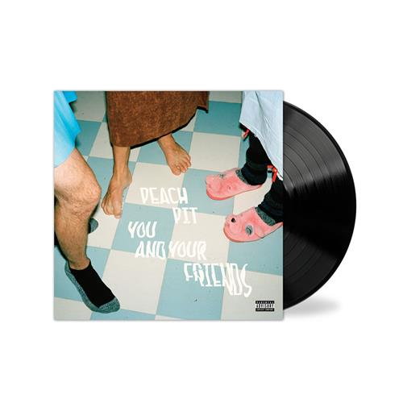
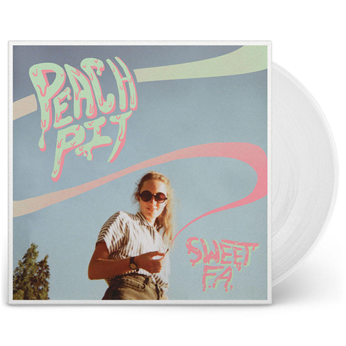
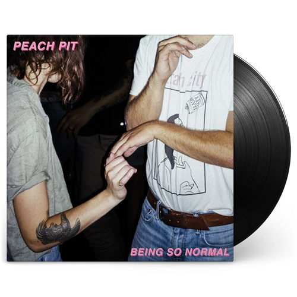

About Us
About Peach Pit
Peach Pit is an indie pop band from Vancouver, British Columbia, Canada. The band is led by singer and rhythm guitarist Neil Smith, lead guitarist Christopher Vanderkooy, bassist Peter Wilton, and drummer Mikey Pascuzzi.
They describe their own music as "chewed bubblegum pop",whereas critics have described their sound as sad pop, and surf rock and is characterized by a soft spoken vocal style and guitar driven rock melodies.
Event information may be out of date due to the coronavirus (COVID-19). Confirm details with event organizers.